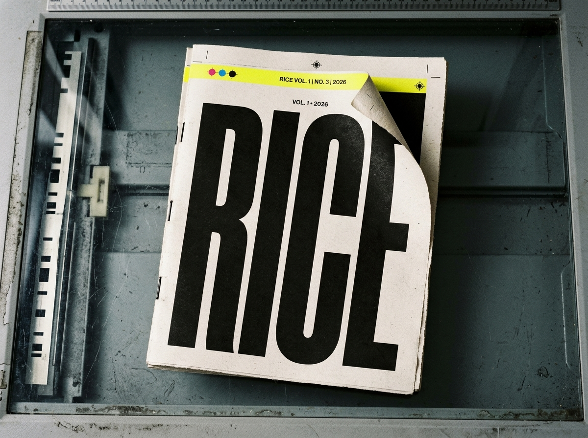

PRELAUNCH / NO ORDERS OR RESERVATIONS OPEN
The Seed Object
The intended first proof for a four-volume Southern year.
StatusEditorial and production development
FormPerfect-bound journal / small book
Extent224 pages planned
InteriorB/W-dominant / planned color signatures
StockUncoated / printer quote pending
PriceNot yet set for sale
PrinterThree quotes required before launch
The photograph shows an early visual specimen, not the final manufactured volume. RICE will not accept money before the rights, printer, production, and fulfillment systems are ready.
The secure updates form requires JavaScript. No address is collected on this page without it.